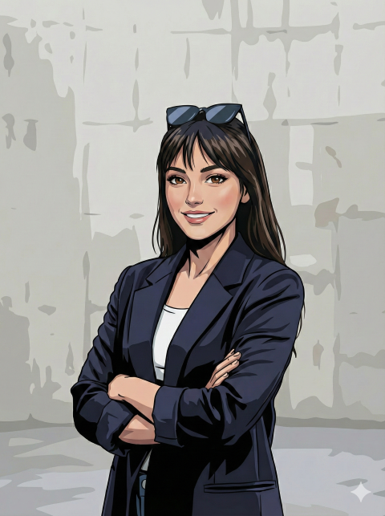

THE FELLOWS



Director & PI
전혜리
Digital Epistemology & Architecture
디지털 기술이 인간의 사고방식을 어떻게 변화시키는지 연구하고, 이를 교육과정에 구조화합니다.
Lead Fellow / AI
김태령
AI-Augmented Cognition
AI를 단순한 자동화 도구가 아닌, 학생의 사고력을 증폭시키는 인지적 파트너로 재정의합니다.
Senior Strategist
인주상
Educational Foresight
급변하는 사회 변화 속에서 변하지 않는 교육의 가치를 찾고, 미래 역량 로드맵을 그립니다.
Environment Architect
김성준
Immersive Learning Env.
학습자가 몰입할 수 있는 최적의 디지털 생태계와 도구를 발굴하고 설계합니다.
Creative Technologist
이윤경
Digital Expression & Storytelling
학생들이 자신의 앎을 다양한 디지털 매체로 변환하여 세상과 소통하는 법을 연구합니다.
Instructional Designer
최종영
Contextual Integration
기술이 교과 본질을 흐리지 않도록, 교육과정의 맥락 속에 디지털 요소를 유기적으로 결합합니다.